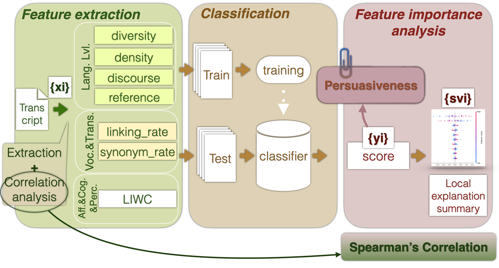

Welcome to Public Speaking Automatic Assessment with AudioTextual Features’s documentation!¶
Introduction¶
This documentation provides an overview of the Public Speaking Automatic Assessment with AudioTextual Features project.
Project Overview
This project aims to automatically assess public speaking performances using audio and textual features. Analysis use classical ML models for classification and regression.
Features¶
Audio Features: Utilizes eGeMAPs feature set.
Textual Features: POSTag and LIWC feature set described in Barkar2023.pdf.